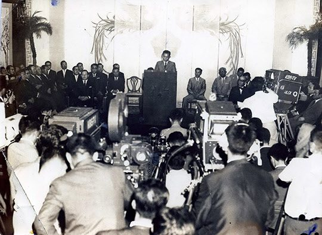
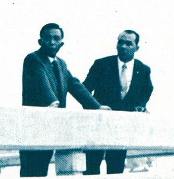

연재일 2014-12-22출처 조선일보 프리미엄조선 연재
한국 정부가 KISA에 휘둘리고 있어서 포스코는 착공 시기조차 예측할 수 없었던 1969년 4월, 국내 정치적 상황은 갈등과 혼란으로 치닫고 있었다. 그해 1월 여당(공화당)이 박정희의 3선을 허용하는 개헌을 검토한다고 발표한 것이 벌집을 쑤신 것 같은 자극적 계기였다.
야당(신민당)은 개헌 저지를 위한 ‘범국민투쟁위원회’를 결성하여 결사투쟁 태세에 돌입하고, 공화당 내부도 반(反)김종필파와 김종필파가 암투를 벌였다. 이것이 극적으로 표출된 사건은 4월의 ‘권오명 문교부 장관 불신임안’ 국회 통과였다. 제3공화국 출범 이래 국회가 최초로 가결한 국무위원 불신임안 표결 결과는 찬성 89표, 반대 57표, 기권 3표였다. 김종필파 공화당 의원들이 여전히 정부는 자기네 지지에 의존하고 있다는 힘을 과시하려고 찬표를 던졌던 것이다.
공화당 지도부는 그들 5명을 제명했다. 여당에서 쫓겨난 김종필파 의원들이 무소속으로 의원직을 유지하는 상황에서 박정희는 ‘개헌 발의를 위한 국회의원 숫자’부터 확보해야 하는 비상한 국면을 맞았다.
박정희는 먼저 김종필을 청와대로 따로 불러서 태도를 돌려세움으로써 개헌안을 국민투표에 부치기 위한 ‘국회 통과’ 요건인 의결정족수 3분의 2를 무난히 확보했다. 그리고 7월 25일 일대 정치적 승부수를 띄운다. 개헌안에 대한 국민투표를 통해 대통령 신임 여부까지 묻겠다는 요지의 대통령 특별담화 발표가 그것이다. 국민 여러분이 3선 개헌안에 찬성해주면 대통령을 계속하고 반대한다면 대통령도 그만두겠다. 이 단서가 개헌 정국에서 태풍의 눈이 되었다.

집권세력이 국민투표에서 3선 개헌안을 통과시키려는 사회적 분위기를 뜨겁게 달구기 위해 총력을 기울여야 하는 여름, 그 입체적 총력전이 예비역 장성들도 응원세력으로 동원하게 되었다. 더러는 능동적 적극적이고 더러는 수동적 소극적인 ‘별들의 행동’을 한곳에 모으는 계책을 짜는 여권 고위층과 중앙정보부. 그들의 망원경에는 당연히 예비역 소장 박태준의 모습이 크게 잡혔다.
김형욱 중앙정보부장이 예비역 장성들의 ‘3선 개헌 지지 성명서’에 박태준의 서명을 받아오라며 포항으로 사람을 보냈다. 심부름꾼은 단순한 생각이었다. 국가를 위한 것이라거나 근대화를 위한 것이라거나 뭐 그런 거창한 당위적 명분을 앞세울 필요도 없이 박정희를 위한 것이니까 마땅히 박태준은 적극 동조할 것이라고 믿었다. 그의 확고한 믿음을 그러나 박태준은 보기 좋게 배반하듯이 단호히 거절했다.
“제철소 하나만 해도 바빠. 정치에는 끼지 않겠어.”
칼로 무를 베듯 서명 요구마저 잘라버린 박태준. 이는 박정희와 박태준의 독특한 관계, 그 완전한 신뢰의 인간관계에 대해 현재를 가늠하고 미래를 예측할 수 있는 하나의 사건이었다.
박정희를 위한 성명서 서명에 거부한 박태준. 기획자들로서는 보잘것없이 조그만 일이라고 여기자면 그렇게 여길 수도 있는 일이겠으나 보기에 따라서는 봄날에 일어났던 김종필의 정치적 항명만큼 심각한 배반일 수도 있다고 판단했다. 그래서 대통령에게 ‘박태준의 항명’을 보고하는 자들의 눈빛과 목소리에는 ‘감히 그럴 수 있나’ 하는 분개가 묻어났다. 이제는 박태준도 끝났다는 고소한 기분마저 느꼈을지 모른다.
그런데 보고를 받는 이가 너무 무덤덤했다. 아니, 보고자들을 나무라듯이, 마치 박태준이 서명을 거절할 때 그랬던 것처럼, 꼭 그렇게 박정희가 딱 잘랐다.
“그 친구 원래 그래. 건드리지 마!”
‘건드리지 마라’는 박정희의 보호를 받은 박태준은 박정희의 ‘특별담화’가 오뉴월 가마솥처럼 달궈놓은 서울을 떠나 도쿄로 날아갔다. 한국 정부가 8월 하순에 열릴 한일각료회담에서 ‘대일청구권자금 전용’에 대한 합의를 끌어낸다고 결정했으니, 박태준에게는 박정희의 지시를 받고 소리 없이 수행해온 대일 물밑교섭을 마무리할 시간이었다. 일본 정부가 한국 정부의 절박한 제안을 받게 만들자면, 무엇보다도 종합제철소 건설에 대한 일본철강연맹의 ‘기술협력 의사표시’를 서류로 확보해둬야 했다. 이것이 예정된 협상에서 소중한 무기였다.

한국정부의 지휘자는 김학렬 부총리였다. 불퇴전의 각오로 반드시 해내야 한다는 박정희 대통령의 엄명을 받은 몸이었다. 그래서 그는 관료들 중 어느 누구보다 가장 철저한 자세로 대일청구권자금 일부의 포항제철 전용을 성사시키려는 한일협상 준비에 각고의 노력을 기울이고 있었다.
8월 6일 박태준은 실무교섭단과 함께 도쿄에 내렸다. 포철에서는 노중열 외국계약부장과 김학기 조사역이, 정부에서는 경제기획원 정문도 차관보와 양윤세 투자진흥관이 동행했다. 연산 조강 103만 톤 규모로 확정한 포항종합제철 1기 건설안을 들고 도쿄에 도착한 박태준의 목표는 명백했다. 일본 3대 제철소인 야하타제철, 후지제철, 니혼강관의 지원을 바탕으로 일본철강연맹의 확약을 받아낼 것, 일본내각의 장관들과 의회 지도자들을 만나서 하나같이 동의하도록 마음을 돌려놓을 것.
박정희의 정치 방면이 3선 개헌 통과를 위해 지략을 짜내는 8월, 박정희의 경제 방면은 무엇보다도 일본정부와 포항제철 건설을 위한 대일청구권자금 전용에 합의하기 위해 총력을 기울이고 있었다.